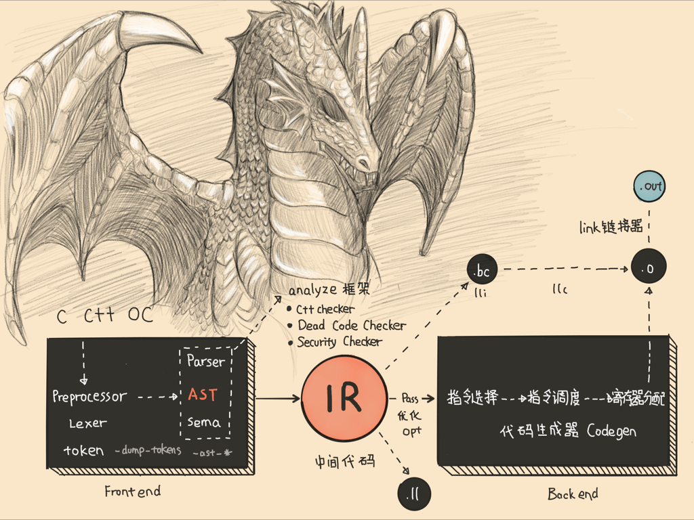

- 00 开篇词 锚定一个点，然后在这个点上深耕.md.html
- 01 建立你自己的iOS开发知识体系.md.html
- 02 App 启动速度怎么做优化与监控？.md.html
- 03 Auto Layout 是怎么进行自动布局的，性能如何？.md.html
- 04 项目大了人员多了，架构怎么设计更合理？.md.html
- 05 链接器：符号是怎么绑定到地址上的？.md.html
- 06 App 如何通过注入动态库的方式实现极速编译调试？.md.html
- 07 Clang、Infer 和 OCLint ，我们应该使用谁来做静态分析？.md.html
- 08 如何利用 Clang 为 App 提质？.md.html
- 09 无侵入的埋点方案如何实现？.md.html
- 10 包大小：如何从资源和代码层面实现全方位瘦身？.md.html
- 11 热点问题答疑（一）：基础模块问题答疑.md.html
- 12 iOS 崩溃千奇百怪，如何全面监控？.md.html
- 13 如何利用 RunLoop 原理去监控卡顿？.md.html
- 14 临近 OOM，如何获取详细内存分配信息，分析内存问题？.md.html
- 15 日志监控：怎样获取 App 中的全量日志？.md.html
- 16 性能监控：衡量 App 质量的那把尺.md.html
- 17 远超你想象的多线程的那些坑.md.html
- 18 怎么减少 App 电量消耗？.md.html
- 19 热点问题答疑（二）：基础模块问题答疑.md.html
- 20 iOS开发的最佳学习路径是什么？.md.html
- 21 除了 Cocoa，iOS还可以用哪些 GUI 框架开发？.md.html
- 22 细说 iOS 响应式框架变迁，哪些思想可以为我所用？.md.html
- 23 如何构造酷炫的物理效果和过场动画效果？.md.html
- 24 A_B 测试：验证决策效果的利器.md.html
- 25 怎样构建底层的发布和订阅事件总线？.md.html
- 26 如何提高 JSON 解析的性能？.md.html
- 27 如何用 Flexbox 思路开发？跟自动布局比，Flexbox 好在哪？.md.html
- 28 怎么应对各种富文本表现需求？.md.html
- 29 如何在 iOS 中进行面向测试驱动开发和面向行为驱动开发？.md.html
- 30 如何制定一套适合自己团队的 iOS 编码规范？.md.html
- 31 iOS 开发学习资料和书单推荐.md.html
- 32 热点问题答疑（三）.md.html
- 33 iOS 系统内核 XNU：App 如何加载？.md.html
- 34 iOS 黑魔法 Runtime Method Swizzling 背后的原理.md.html
- 35 libffi：动态调用和定义 C 函数.md.html
- 36 iOS 是怎么管理内存的？.md.html
- 37 如何编写 Clang 插件？.md.html
- 38 热点问题答疑（四）.md.html
- 39 打通前端与原生的桥梁：JavaScriptCore 能干哪些事情？.md.html
- 40 React Native、Flutter 等，这些跨端方案怎么选？.md.html
- 41 原生布局转到前端布局，开发思路有哪些转变？.md.html
- 42 iOS原生、大前端和Flutter分别是怎么渲染的？.md.html
- 43 剖析使 App 具有动态化和热更新能力的方案.md.html
- 用户故事 我是如何学习这个专栏的？.md.html
- 结束语 慢几步，深几度.md.html
- 捐赠
08 如何利用 Clang 为 App 提质？
你好，我是戴铭。
以前在工作中，有段时间连续发生了多次线上事故，在复盘时大家都提出是因为代码不规范、代码规范执行不到位，从而导致代码质量过差，无法监管，我们才被动处理线上事故。会上牢骚发完，会后应该怎么执行呢？
我们都知道，监管手段是需要自己动手建设的，第三方工具无法满足所有的业务技术规范监控。在上篇文章“Clang、Infer 和 OCLint ，我们应该使用谁来做静态分析？”中，我们提到通过 Clang 提供的丰富接口功能就可以开发出静态分析工具，进而管控代码质量。
除此之外，基于 Clang 还可以开发出用于代码增量分析、代码可视化、代码质量报告来保障 App 质量的系统平台，比如CodeChecker。
比如，当周末发现线上问题时，你会发现很多时候分析问题的人都不在电脑边，无法及时处理问题。这时，我们就需要一款在线网页代码导航工具，比如 Mozilla 开发的 DXR，方便在便携设备上去操作、分析问题，这样的工具都是基于 Clang 开发的。
Clang的功能如此强大，那么它到底是什么呢？Clang 做了哪些事情？Clang 还提供了什么能力可以为 App 提质呢？今天，我们就一起来看看这几个问题吧。
什么是 Clang？
关于Clang是什么，你可以先看一下如下所示的iOS开发的完整编译流程图。

图1 iOS开发完整的编译流程图
图中，左侧黑块部分就是Clang。Clang 是 C、C++、Objective-C 的编译前端，而Swift 有自己的编译前端（也就是Swift 前端多出的SIL optimizer）。
接下来，我们一起看看使用Clang有哪些优势。这，可以帮助我们理解本篇文章的后半部分内容。
第一，对于使用者来说，Clang 编译的速度非常快，对内存的使用率非常低，并且兼容GCC。
第二，对于代码诊断来说， Clang 也非常强大，Xcode 也是用的 Clang。使用 Clang 编译前端，可以精确地显示出问题所在的行和具体位置，并且可以确切地说明出现这个问题的原因，并指出错误的类型是什么，使得我们可以快速掌握问题的细节。这样的话，我们不用看源码，仅通过 Clang 突出标注的问题范围也能够了解到问题的情况。
第三，Clang对 typedef 的保留和展开也处理得非常好。typedef 可以缩写很长的类型，保留 typedef 对于粗粒度诊断分析很有帮助。但有时候，我们还需要了解细节，对 typedef 进行展开即可。
第四，Fix-it 提示也是 Clang 提供的一种快捷修复源码问题的方式。在宏的处理上，很多宏都是深度嵌套的， Clang 会自动打印实例化信息和嵌套范围信息来帮助你进行宏的诊断和分析。
第五，Clang 的架构是模块化的。除了代码静态分析外，利用其输出的接口还可以开发用于代码转义、代码生成、代码重构的工具，方便与IDE 进行集成。
与Clang的强大功能相对立的是，GCC 对于 Objective-C 的支持比较差，效率和性能都没有办法达到苹果公司的要求，而且它还难以推动 GCC 团队。
于是，苹果公司决定自己来掌握编译相关的工具链，将天才克里斯·拉特纳（Chris Lattner）招入麾下后开发了 LLVM 工具套件，将 GCC 全面替换成了 LLVM。这，也使得 Swift这门集各种高级语言特性的语言，能够在非常高的起点上，出现在开发者面前。
Clang是基于C++开发的，如果你想要了解 Clang 的话，需要有一定的 C++ 基础。但是，Clang 源码本身质量非常高，有很多值得学习的地方，比如说目录清晰、功能解耦做得很好、分类清晰方便组合和复用、代码风格统一而且规范、注释量大便于阅读等。
我们阅读Clang的源码，除了可以帮助我们了解Clang以外，还可以给我们提供一个学习优秀代码、提升编程思维能力的机会。特别是在编写自定义插件或者工具时，如果你对用到的接口了解得不是很清楚，或者好奇接口的实现，这时候去看源码，对于你的帮助是非常大的。
你可以点击这里的链接，在线查看 Clang 源码。
查看Clang的源码，你会发现它不光工程代码量巨大，而且工具也非常多，相互间的关系复杂。但是，好在 Clang 提供了一个易用性很高的黑盒 Driver，用于封装前端命令和工具链的命令，使得其易用性得到了很大的提升。
Clang 做了哪些事？
接下来，我通过前面提到的 Driver 命令来看看 Clang 对源码做了哪些事儿？
我们先看看下面这段示例代码：
int main()
{
int a;
int b = 10;
a = b;
return a;
}
首先，Clang 会对代码进行词法分析，将代码切分成 Token。输入一个命令可以查看上面代码的所有的 Token。命令如下：
clang -fmodules -E -Xclang -dump-tokens main.m
这个命令的作用是，显示每个 Token 的类型、值，以及位置。你可以在这个链接中，看到Clang 定义的所有Token 类型。我们可以把这些Token类型，分为下面这4类。
关键字：语法中的关键字，比如 if、else、while、for 等；
标识符：变量名；
字面量：值、数字、字符串；
特殊符号：加减乘除等符号。
接下来，词法分析完后就会进行语法分析，将输出的 Token 先按照语法组合成语义，生成类似 VarDecl 这样的节点，然后将这些节点按照层级关系构成抽象语法树（AST）。
在终端输入下面的这条命令，你就可以查看前面源码的语法树：
clang -fmodules -fsyntax-only -Xclang -ast-dump main.m
打印出来效果如下：
TranslationUnitDecl 0xc75b450 <<invalid sloc>> <invalid sloc>
|-TypedefDecl 0xc75b740 <<invalid sloc>> <invalid sloc> implicit __builtin_va_list ‘char *’
`-FunctionDecl 0xc75b7b0 <test.cpp:1:1, line:7:1> line:1:5 main ‘int (void)’
`-CompoundStmt 0xc75b978 <line:2:1, line:7:1>
|-DeclStmt 0xc75b870 <line:3:2, col:7>
| `-VarDecl 0xc75b840 <col:2, col:6> col:6 used a ‘int’
|-DeclStmt 0xc75b8d8 <line:4:2, col:12>
| `-VarDecl 0xc75b890 <col:2, col:10> col:6 used b ‘int’ cinit
| `-IntegerLiteral 0xc75b8c0 <col:10> ‘int’ 10
<<<<<<<<<<<<<<<<<<<<<<<<<<<<<<< a = b <<<<<<<<<<<<<<<<<<<<<<<<<<<<<<<<<<<<<<<<
|-BinaryOperator 0xc75b928 <line:5:2, col:6> ‘int’ lvalue ‘=‘
| |-DeclRefExpr 0xc75b8e8 <col:2> ‘int’ lvalue Var 0xc75b840 ‘a’ ‘int’
| `-ImplicitCastExpr 0xc75b918 <col:6> ‘int’ <LValueToRValue>
| `-DeclRefExpr 0xc75b900 <col:6> ‘int’ lvalue Var 0xc75b890 ‘b’ ‘int’
<<<<<<<<<<<<<<<<<<<<<<<<<<<<<<<<<<<<<<<<<<<<<<<<<<<<<<<<<<<<<<<<<<<<<<<<<<<<<<
`-ReturnStmt 0xc75b968 <line:6:2, col:9>
`-ImplicitCastExpr 0xc75b958 <col:9> ‘int’ <LValueToRValue>
`-DeclRefExpr 0xc75b940 <col:9> ‘int’ lvalue Var 0xc75b840 ‘a’ ‘int
其中TranslationUnitDecl 是根节点，表示一个编译单元；Decl 表示一个声明；Expr 表示的是表达式；Literal 表示字面量，是一个特殊的 Expr；Stmt 表示陈述。
除此之外，Clang 还有众多种类的节点类型。Clang 里，节点主要分成 Type 类型、Decl 声明、Stmt 陈述这三种，其他的都是这三种的派生。通过扩展这三类节点，就能够将无限的代码形态用有限的形式来表现出来了。
接下来，我们再看看Clang提供了什么能力。
Clang 提供了什么能力？
Clang 为一些需要分析代码语法、语义信息的工具提供了基础设施。这些基础设施就是 LibClang、Clang Plugin 和 LibTooling。
LibClang
LibClang 提供了一个稳定的高级 C 接口，Xcode 使用的就是 LibClang。LibClang 可以访问 Clang 的上层高级抽象的能力，比如获取所有 Token、遍历语法树、代码补全等。由于 API 很稳定，Clang 版本更新对其影响不大。但是，LibClang 并不能完全访问到 Clang AST 信息。
使用 LibClang 可以直接使用它的 C API。官方也提供了 Python binding 脚本供你调用。还有开源的 node-js/ruby binding。你要是不熟悉其他语言，还有个第三方开源的 Objective-C 写的ClangKit库可供使用。
Clang Plugins
Clang Plugins 可以让你在 AST 上做些操作，这些操作能够集成到编译中，成为编译的一部分。插件是在运行时由编译器加载的动态库，方便集成到构建系统中。
使用 Clang Plugins 一般都是希望能够完全控制 Clang AST，同时能够集成在编译流程中，可以影响编译的过程，进行中断或者提示。关于 Clang Plugins 开发的更多内容，我会在第37篇文章“如何编写 Clang 插件？”中和你详细说明。
LibTooling
LibTooling 是一个 C++ 接口，通过 LibTooling 能够编写独立运行的语法检查和代码重构工具。LibTooling 的优势如下：
所写的工具不依赖于构建系统，可以作为一个命令单独使用，比如 clang-check、clang-fixit、clang-format；
可以完全控制 Clang AST；
能够和 Clang Plugins 共用一份代码。
与Clang Plugins 相比，LibTooling 无法影响编译过程；与 LibClang 相比，LibTooling 的接口没有那么稳定，也无法开箱即用，当 AST 的 API 升级后需要更新接口的调用。
但是，LibTooling 基于能够完全控制 Clang AST 和可独立运行的特点，可以做的事情就非常多了。
改变代码：可以改变 Clang 生成代码的方式。基于现有代码可以做出大量的修改。还可以进行语言的转换，比如把 OC 语言转成 JavaScript 或者 Swift。
做检查：检查命名规范，增加更强的类型检查，还可以按照自己的定义进行代码的检查分析。
做分析：对源码做任意类型分析，甚至重写程序。给 Clang 添加一些自定义的分析，创建自己的重构器，还可以基于工程生成相关图形或文档进行分析。
在 LibTooling 的基础之上有个开发人员工具合集 Clang tools，Clang tools 作为 Clang 项目的一部分，已经提供了一些工具，主要包括：
语法检查工具 clang-check；
自动修复编译错误工具 clang-fixit；
自动代码格式工具 clang-format；
新语言和新功能的迁移工具；
重构工具。
如果你打算基于 LibTooling 来开发工具，Clang tools 将会是很好的范例。
官方有一个教程叫作 Tutorial for building tools using LibTooling and LibASTMatchers，可以一步步地告诉你怎样使用 LibTooling 来构建一个语言转换的工具。通过这个教程，你可以掌握LibTooling 的基本使用方法。
小结
在今天这篇文章中，我和你说了 Clang 做了什么，以及提供了什么能力。从中可以看出，Clang 提供的能力都是基于Clang AST 接口的。
这个接口的功能非常强大，除了能够获取符号在源码中的位置，还可以获取方法的调用关系，类型定义和源码里的所有内容。
以这个接口为基础，再利用 LibClang、 Clang Plugin 和 LibTooling 这些封装好的工具，就足够我们去开发出满足静态代码分析需求的工具了。比如，我们可以使用 Clang Plugin 自动在构建阶段检查是否满足代码规范，不满足则直接无法构建成功。再比如，我们可以使用 LibTooling 自动完成代码的重构，与手动重构相比会更加高效、精确。
还记得我们在上一篇文章“Clang、Infer 和 OCLint ，我们应该使用谁来做静态分析？”中，提到的Clang 静态分析器的引擎吗？它使用的就是Clang AST 接口，对于节点 Stmt、Decl、Type 及其派生节点 Clang AST 都有对应的接口，特别是 RecursiveASTVisitor 接口可以完整遍历整个 AST。通过对 AST 的完整遍历以及节点数据获取，就能够对数据流进行分析，比如Iterative Data Flow Analysis、path-sensitive、path-insensitive、flow-sensitive等。
此外，还能够模拟内存分配进行分析，Clang 静态分析器里对应的模块是 MemRegion，其中内存模型是基于 “A Memory Model for Static Analysis of C Programs”这篇论文而来。在Clang里的具体实现代码，你可以查看 MemRegion.h 和 RegionStore.cpp 这两个文件。对于 Clang 静态分析器的原理描述，你可以参看官方说明。
手中握有好兵器，你对App 代码质量的掌控也就有了底气。程序员开发软件的目的，就是要提高开发效率，同时也不要忽略检查代码质量时的效率。所以，对于开发者来说，我们要避免人工繁琐的 Review 代码，并减少由人工带来的低效和高差错率。我们的原则就是，能够让程序自动解决的，绝对不要人工手动完成。
课后作业
请你搭建 Clang 的开发环境，然后基于 LibTooling 编写一个简单语法转换工具，比如把 C 语言的方法调用转 Lisp 方法调用。
C 的方法调用代码：
multiply(add(1.4, 3))
Lisp 的方法调用代码：
(multiply (add 1.4 3))
感谢你的收听，欢迎你在评论区给我留言分享你的观点，也欢迎把它分享给更多的朋友一起阅读。
© 2019 - 2023 Liangliang Lee. Powered by gin and hexo-theme-book.